import torch
import torchvision
import matplotlib.pyplot as plt📘 Note Format Guide
This format serves as a structured guide for organizing lecture content, personal interpretation, experiments, and study-related questions.
| Type | What It Means | When I Use It |
|---|---|---|
| 📝 Lecture | Original material from the professor’s notes | When I’m referencing core concepts or provided code |
| 🗣️ In-Class Note | Verbal explanations shared during the lecture | When I want to record something the professor said in class but didn’t include in the official notes |
| ✍️ My Note | My thoughts, interpretations, or additional explanations | When I reflect on or explain something in my own words |
| 🔬 Experiment | Code I tried out or changed to explore further | When I test variations or go beyond the original example |
| ❓ Question | Questions I had while studying | When I want to revisit or research something more deeply |
📝 🗣️ ✍️ 🔬 ❓
1. 강의노트 원본 및 영상 링크
2. Imports 📝
plt.rcParams['figure.figsize'] = (4.5, 3.0)3. CNN 핵심레이어 📝
A. torch.nn.ReLU
B. torch.nn.MaxPool2d
C. torch.nn.Conv2d
(예시1) 연산방법, stride=2
img = torch.rand(1,1,4,4)
conv = torch.nn.Conv2d(in_channels=1,out_channels=1,kernel_size=2,stride=2)imgtensor([[[[0.4497, 0.4023, 0.3869, 0.1770],
[0.6399, 0.1175, 0.1347, 0.2738],
[0.4462, 0.3765, 0.1285, 0.7986],
[0.9917, 0.9030, 0.9250, 0.5513]]]])conv(img)tensor([[[[ 0.0084, 0.0557],
[-0.1183, 0.1122]]]], grad_fn=<ConvolutionBackward0>)??
conv.weight.data, conv.bias.data(tensor([[[[-0.0637, 0.4369],
[-0.2863, -0.0190]]]]),
tensor([0.0468]))(img[:, :, :2, :2] * conv.weight.data).sum()+conv.bias.data, conv(img)(tensor([0.0084]),
tensor([[[[ 0.0084, 0.0557],
[-0.1183, 0.1122]]]], grad_fn=<ConvolutionBackward0>))(img[:, :, :2, 2:] * conv.weight.data).sum()+conv.bias.data, conv(img)(tensor([0.0557]),
tensor([[[[ 0.0084, 0.0557],
[-0.1183, 0.1122]]]], grad_fn=<ConvolutionBackward0>))(img[:, :, :2, 2:] * conv.weight.data).sum()+conv.bias.data, conv(img)(tensor([0.0557]),
tensor([[[[ 0.0084, 0.0557],
[-0.1183, 0.1122]]]], grad_fn=<ConvolutionBackward0>))(img[:, :, 2:, 2:] * conv.weight.data).sum()+conv.bias.data, conv(img)(tensor([0.1122]),
tensor([[[[ 0.0084, 0.0557],
[-0.1183, 0.1122]]]], grad_fn=<ConvolutionBackward0>))
Note
입력이 1장의 흑백이미지이고 출력도 1장의 흑백이미지일 경우 컨볼루션 계산과정 요약1
- 윈도우생성:
kernel_size= (?,?) 인 윈도우를 만듦 - sub-img생성: 입력 이미지에 윈도우를 통과시켜 (?,?) 크기의 sub-img를 만듦.
- 연산: sub-img의 각 원소에
conv.weight의 값을 원소별로 (=element-wisely) 곱하고 결과를 더함. (만약에conv.bias가 있다면 최종결과에 bias를 더함) - 이동&반복: 윈도우를
stride만큼 이동하여 반복. (stride=1 이라면 한칸씩,stride=2 라면 두칸씩 이동)
(예시2) – 재현
“A guide to convolution arithmetic for deep learning” [@dumoulin2016guide] 에 나온 그림재현
🗣️ 우측 하단 작은 숫자: weight

img = torch.tensor([
[3,3,2,1,0],
[0,0,1,3,1],
[3,1,2,2,3],
[2,0,0,2,2],
[2,0,0,0,1]
]).reshape(1,1,5,5).float()
imgtensor([[[[3., 3., 2., 1., 0.],
[0., 0., 1., 3., 1.],
[3., 1., 2., 2., 3.],
[2., 0., 0., 2., 2.],
[2., 0., 0., 0., 1.]]]])conv = torch.nn.Conv2d(in_channels=1,out_channels=1,kernel_size=3,bias=False) # bias=0 하드코딩해도 됨
conv.weight.data = torch.tensor([[[
[ 0.0, 1.0, 2.0],
[ 2.0, 2.0, 0.0],
[ 0.0, 1.0, 2.0]
]]])conv(img)tensor([[[[12., 12., 17.],
[10., 17., 19.],
[ 9., 6., 14.]]]], grad_fn=<ConvolutionBackward0>)(예시3) 이동평균
img = torch.arange(1,17).float().reshape(1,1,4,4)
imgtensor([[[[ 1., 2., 3., 4.],
[ 5., 6., 7., 8.],
[ 9., 10., 11., 12.],
[13., 14., 15., 16.]]]])conv = torch.nn.Conv2d(in_channels=1,out_channels=1,kernel_size=2,stride=1,bias=False)
conv.weight.data = conv.weight.data*0 + 1/4
conv.weight.datatensor([[[[0.2500, 0.2500],
[0.2500, 0.2500]]]])🗣️ 이동하면서 평균을 계산
conv(img)tensor([[[[ 3.5000, 4.5000, 5.5000],
[ 7.5000, 8.5000, 9.5000],
[11.5000, 12.5000, 13.5000]]]], grad_fn=<ConvolutionBackward0>)(예시4) 2개의 이미지
🗣️ (n,1,?,?), (1,3,?,?) 등도 가능
- 개념: (1,1,?,?) \(\to\) (1,1,?,?) 의 conv를 observation 별로 적용
conv에 포함된 파라메터 수는 (1,1,?,?) \(\to\) (1,1,?,?) 인 경우와 (n,1,?,?) \(\to\) (n,1,?,?)인 경우가 동일
imgs = torch.arange(1,33).float().reshape(2,1,4,4)
conv = torch.nn.Conv2d(in_channels=1,out_channels=1,kernel_size=2,stride=1,bias=False)
conv.weight.data = conv.weight.data*0 + 1/4🗣️ 위에 있는 거 한 장, 아래에 있는 거 한 장
imgstensor([[[[ 1., 2., 3., 4.],
[ 5., 6., 7., 8.],
[ 9., 10., 11., 12.],
[13., 14., 15., 16.]]],
[[[17., 18., 19., 20.],
[21., 22., 23., 24.],
[25., 26., 27., 28.],
[29., 30., 31., 32.]]]])conv(imgs) # 이동평균tensor([[[[ 3.5000, 4.5000, 5.5000],
[ 7.5000, 8.5000, 9.5000],
[11.5000, 12.5000, 13.5000]]],
[[[19.5000, 20.5000, 21.5000],
[23.5000, 24.5000, 25.5000],
[27.5000, 28.5000, 29.5000]]]], grad_fn=<ConvolutionBackward0>)🗣️(
conv.weight.shapetorch.Size([1, 1, 2, 2])- 숫자가 4개 (2*2)
- 하나의 conv를 다른 이미지에도 적용
conv에 포함된 파라메터 수는 (1,1,?,?) \(\to\) (1,1,?,?) 인 경우와 (n,1,?,?) \(\to\) (n,1,?,?)인 경우가 동일
)🗣️
(예시5) 2개의 이미지, 2개의 out_channels
🗣️ 같은 이미지에 conv를 2번씩 거는 경우
- 개념: (1,1,?,?) \(\to\) (1,1,?,?) 의 conv를 한번 적용, 그것과 별개로 (1,1,?,?) \(\to\) (1,1,?,?) 인 다른 conv를 적용함. (즉 하나의 observation당 2번 conv변환) 이것을 observation별로 반복
- (1,1,?,?) \(\to\) (1,2,?,?) 인 경우는 (1,1,?,?) \(\to\) (1,1,?,?)인 경우보다
conv에 포함된 파라메터 수가 2배 많음 - 그런데 (1,1,?,?) \(\to\) (1,2,?,?) 인 경우와 (n,1,?,?) \(\to\) (n,2,?,?)인 경우는
conv에 포함된 파라메터 수가 같음. - 따라서 (n,1,?,?) \(\to\) (n,2,?,?) 인 경우는 (1,1,?,?) \(\to\) (1,1,?,?)인 경우보다
conv에 포함된 파라메터 수가 2배 많음
img = torch.arange(1,33).float().reshape(2,1,4,4)
conv = torch.nn.Conv2d(in_channels=1,out_channels=2,kernel_size=2,stride=1,bias=False)🗣️(
conv.weightParameter containing:
tensor([[[[-0.0698, 0.1491],
[ 0.3877, 0.0913]]],
[[[-0.2105, 0.0241],
[-0.4239, 0.2689]]]], requires_grad=True)img.shape # 2장, 흑백, 4*4torch.Size([2, 1, 4, 4])conv(img).shapetorch.Size([2, 2, 3, 3]))🗣️
imgtensor([[[[ 1., 2., 3., 4.],
[ 5., 6., 7., 8.],
[ 9., 10., 11., 12.],
[13., 14., 15., 16.]]],
[[[17., 18., 19., 20.],
[21., 22., 23., 24.],
[25., 26., 27., 28.],
[29., 30., 31., 32.]]]])conv.weight.data[0] = conv.weight.data[0]*0 +1/4 # 평균을 의미 (bias=False)
conv.weight.data[1] = conv.weight.data[0]*0conv(img)tensor([[[[ 3.5000, 4.5000, 5.5000],
[ 7.5000, 8.5000, 9.5000],
[11.5000, 12.5000, 13.5000]],
[[ 0.0000, 0.0000, 0.0000],
[ 0.0000, 0.0000, 0.0000],
[ 0.0000, 0.0000, 0.0000]]],
[[[19.5000, 20.5000, 21.5000],
[23.5000, 24.5000, 25.5000],
[27.5000, 28.5000, 29.5000]],
[[ 0.0000, 0.0000, 0.0000],
[ 0.0000, 0.0000, 0.0000],
[ 0.0000, 0.0000, 0.0000]]]], grad_fn=<ConvolutionBackward0>)🗣️ 하나의 이미지가 2개의 채널로 분리 됨 (하나의 채널은 이동평균, 다른 하나는 0)
4. CNN의 학습원리 📝
A. data
아래의 4개의 이미지를 생각하자 .
img0 = torch.tensor([
[0.1, 0.1, 0.1, 0.1, 0.1, 0.1, 0.1, 0.1, 0.0, 0.0, 0.0, 0.0, 0.0, 0.0, 0.0, 0.0],
[0.1, 0.1, 0.1, 0.1, 0.1, 0.1, 0.1, 0.1, 0.0, 0.0, 0.0, 0.0, 0.0, 0.0, 0.0, 0.0],
[0.1, 0.1, 0.1, 0.1, 0.1, 0.1, 0.1, 0.1, 0.0, 0.0, 0.0, 0.0, 0.0, 0.0, 0.0, 0.0],
[0.1, 0.1, 0.1, 0.1, 0.1, 0.1, 0.1, 0.1, 0.0, 0.0, 0.0, 0.0, 0.0, 0.0, 0.0, 0.0],
[0.1, 0.1, 0.1, 0.1, 0.1, 0.1, 0.1, 0.1, 0.0, 0.0, 0.0, 0.0, 0.0, 0.0, 0.0, 0.0],
[0.1, 0.1, 0.1, 0.1, 0.1, 0.1, 0.1, 0.1, 0.0, 0.0, 0.0, 0.0, 0.0, 0.0, 0.0, 0.0],
[0.1, 0.1, 0.1, 0.1, 0.1, 0.1, 0.1, 0.1, 0.0, 0.0, 0.0, 0.0, 0.0, 0.0, 0.0, 0.0],
[0.1, 0.1, 0.1, 0.1, 0.1, 0.1, 0.1, 0.1, 0.0, 0.0, 0.0, 0.0, 0.0, 0.0, 0.0, 0.0],
[0.1, 0.1, 0.1, 0.1, 0.1, 0.1, 0.1, 0.1, 0.0, 0.0, 0.0, 0.0, 0.0, 0.0, 0.0, 0.0],
[0.1, 0.1, 0.1, 0.1, 0.1, 0.1, 0.1, 0.1, 0.0, 0.0, 0.0, 0.0, 0.0, 0.0, 0.0, 0.0],
[0.1, 0.1, 0.1, 0.1, 0.1, 0.1, 0.1, 0.1, 0.0, 0.0, 0.0, 0.0, 0.0, 0.0, 0.0, 0.0],
[0.1, 0.1, 0.1, 0.1, 0.1, 0.1, 0.1, 0.1, 0.0, 0.0, 0.0, 0.0, 0.0, 0.0, 0.0, 0.0],
[0.1, 0.1, 0.1, 0.1, 0.1, 0.1, 0.1, 0.1, 0.0, 0.0, 0.0, 0.0, 0.0, 0.0, 0.0, 0.0],
[0.1, 0.1, 0.1, 0.1, 0.1, 0.1, 0.1, 0.1, 0.0, 0.0, 0.0, 0.0, 0.0, 0.0, 0.0, 0.0],
[0.1, 0.1, 0.1, 0.1, 0.1, 0.1, 0.1, 0.1, 0.0, 0.0, 0.0, 0.0, 0.0, 0.0, 0.0, 0.0],
[0.1, 0.1, 0.1, 0.1, 0.1, 0.1, 0.1, 0.1, 0.0, 0.0, 0.0, 0.0, 0.0, 0.0, 0.0, 0.0]
]).reshape(1, 1, 16, 16)
img1 = 0.1-torch.einsum('nchw->ncwh', img0.clone())
img2 = torch.zeros((1, 1, 16, 16))
for i in range(16):
for j in range(16):
if j <= i: # 대각선 아래 삼각형
img2[0, 0, i, j] = 0.1
# 빈 이미지
img3 = torch.zeros((1, 1, 16, 16))
block_size = 2
# 블록 단위로 채우기
for i in range(0, 16, block_size):
for j in range(0, 16, block_size):
if ((i // block_size) + (j // block_size)) % 2 == 0:
img3[0, 0, i:i+block_size, j:j+block_size] = 0.1🗣️(
img0.shape # 16*16 흑백 이미지torch.Size([1, 1, 16, 16])plt.imshow(img0.reshape(16,16),cmap="gray")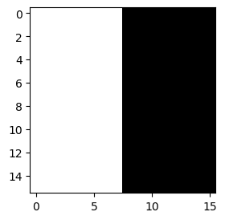
- 0.1이 흰색, 0이 검정색
plt.imshow(img1.reshape(16,16),cmap="gray")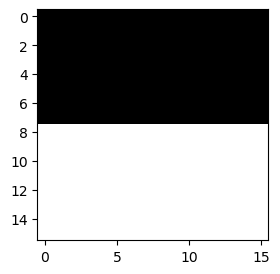
plt.imshow(img2.reshape(16,16),cmap="gray")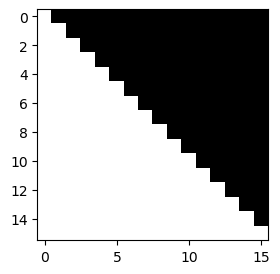
plt.imshow(img3.reshape(16,16),cmap="gray")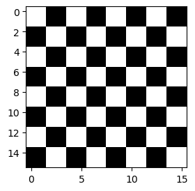
img3.shapetorch.Size([1, 1, 16, 16])img3.reshape(16,16).shapetorch.Size([16, 16])img3.squeeze().shape # 차원이 1인것은 줄어드는 methodtorch.Size([16, 16]))🗣️
fig, axs = plt.subplots(2,2)
fig.set_figheight(8)
fig.set_figwidth(8)
axs[0][0].imshow(img0.squeeze(),cmap="gray")
axs[0][1].imshow(img1.squeeze(),cmap="gray")
axs[1][0].imshow(img2.squeeze(),cmap="gray")
axs[1][1].imshow(img3.squeeze(),cmap="gray")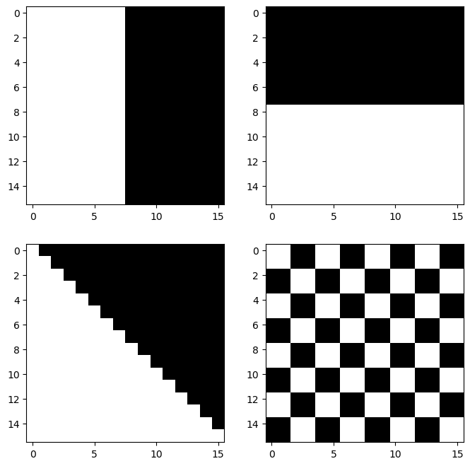
imgs = torch.concat([img0,img1,img2,img3],axis=0)
imgs.shapetorch.Size([4, 1, 16, 16])B. vertical edge
🗣️(
x1 x2 x3 x4
x5 x6 x7 x8
x9 x10 x11 x12
x13 x14 x15 x16
[-1 1
-1 1]
x1 x2
x5 x6
에 적용하면
-x1 x2
-x5 x6
다 더하면
-x1 + x2 -x5 + x6
= (x2-x1) + (x6-x5)
둘 씩 비교하여 변화가 있으면 1, 없으면 0
예시)
0 0 1 1
0 0 1 1
0 0 1 1
0 0 1 1
적용 후
0 1 0
0 1 0
0 1 0
확장)
0 0 0 1 1 1
0 0 0 1 1 1
0 0 0 1 1 1
0 0 0 1 1 1
0 0 0 1 1 1
0 0 0 1 1 1
적용 후
0 0 1 0 0
0 0 1 0 0
0 0 1 0 0
0 0 1 0 0
0 0 1 0 0v_conv = torch.nn.Conv2d(
in_channels=1,
out_channels=1,
kernel_size=2,
bias=False
)v_conv.weight.data = torch.tensor([[[
[-1.0, 1.0],
[-1.0, 1.0]
]]])plt.imshow(v_conv(img0).squeeze().data, cmap="gray")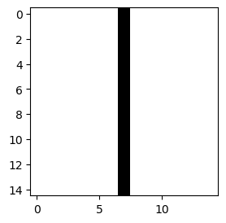
plt.imshow(v_conv(img1).squeeze().data, cmap="gray")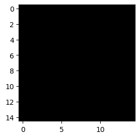
plt.imshow(v_conv(img2).squeeze().data, cmap="gray")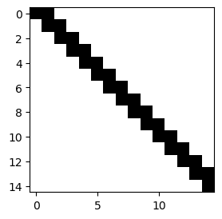
plt.imshow(v_conv(img3).squeeze().data, cmap="gray")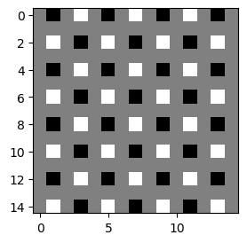
- 회색: 값 변화 X, 검정색: 흰색->검정색, 흰색: 검정색->흰색
- 이동평균과 kernel_size를 맞춰주면 밑의 코드와 같음
)🗣️
v_conv = torch.nn.Conv2d(
in_channels=1,
out_channels=1,
kernel_size=4,
bias=False
)v_conv.weight.data = torch.tensor([[[
[ 0, 0, 0, 0],
[ 0, 1.0, -1.0, 0],
[0, 1.0, -1.0, 0],
[ 0, 0, 0, 0]
]]])이
v_conv는 좌우방향의 픽셀변화, 즉 수직 방향의 엣지(vertical edge)를 감지하는데 적절하다.
fig, axs = plt.subplots(2,2)
fig.set_figheight(8)
fig.set_figwidth(8)
axs[0][0].imshow(v_conv(imgs)[0].squeeze().data,cmap="gray")
axs[0][1].imshow(v_conv(imgs)[1].squeeze().data,cmap="gray")
axs[1][0].imshow(v_conv(imgs)[2].squeeze().data,cmap="gray")
axs[1][1].imshow(v_conv(imgs)[3].squeeze().data,cmap="gray")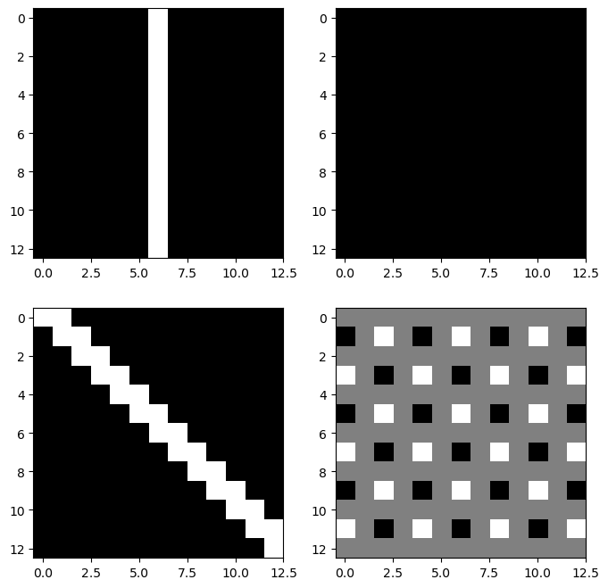
🗣️ 왼쪽과 오른쪽을 비교하여 edge를 걸었더니 모두 0이면 위아래임을 알 수 있음
C. horizontal edge
✍️(
x1 x2 x3 x4
x5 x6 x7 x8
x9 x10 x11 x12
x13 x14 x15 x16
[-1 -1
1 1]
x1 x2
x5 x6
에 적용하면
-x1 -x2
x5 x6
다 더하면
-x1 - x2 + x5 + x6
= (x5-x1) + (x6-x2)
둘 씩 비교하여 변화가 있으면 1, 없으면 0
예시)
1 1 1 1
1 1 1 1
0 0 0 0
0 0 0 0
적용 후
0 0 0
1 1 1
0 0 0
확장)
1 1 1 1 1 1
1 1 1 1 1 1
1 1 1 1 1 1
0 0 0 0 0 0
0 0 0 0 0 0
0 0 0 0 0 0
적용 후
0 0 0 0 0
0 0 0 0 0
1 1 1 1 1
0 0 0 0 0
0 0 0 0 0)✍️
h_conv = torch.nn.Conv2d(
in_channels=1,
out_channels=1,
kernel_size=4,
bias=False
)h_conv.weight.data = torch.tensor([[[
[ 0, 0, 0, 0],
[ 0, -1.0, -1.0, 0],
[0, 1.0, 1.0, 0],
[ 0, 0, 0, 0]
]]])이
h_conv는 위아레 방향의 픽셀변화, 즉 수평엣지(horizontal edge)를 감지하는데 적절하다.
fig, axs = plt.subplots(2,2)
fig.set_figheight(8)
fig.set_figwidth(8)
axs[0][0].imshow(h_conv(imgs)[0].squeeze().data,cmap="gray")
axs[0][1].imshow(h_conv(imgs)[1].squeeze().data,cmap="gray")
axs[1][0].imshow(h_conv(imgs)[2].squeeze().data,cmap="gray")
axs[1][1].imshow(h_conv(imgs)[3].squeeze().data,cmap="gray")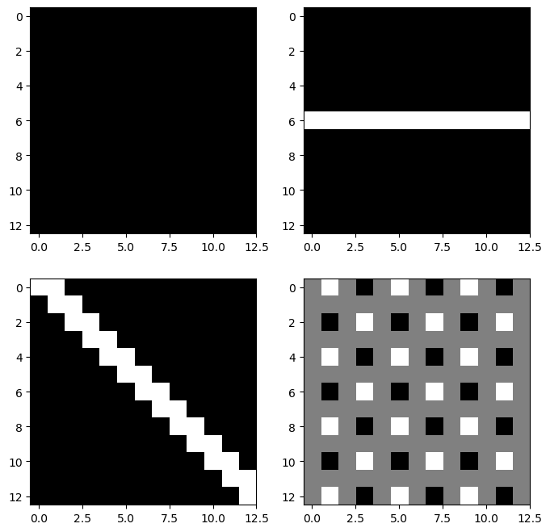
🗣️ 위쪽과 아래쪽을 비교하여 edge를 걸었더니 모두 0이면 좌우임을 알 수 있음
D. 이동평균
🗣️(
m_conv = torch.nn.Conv2d(
in_channels=1,
out_channels=1,
kernel_size=4,
)
m_conv.weight.data = m_conv.weight.data*0 + 1/16 # 16개 pixel에 대한 평균
m_conv.bias.data = m_conv.bias.data*0m_conv(img0).shapetorch.Size([1, 1, 13, 13])m_conv(img0).squeeze().shapetorch.Size([13, 13])plt.imshow(m_conv(img0).squeeze().data, cmap="gray")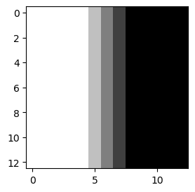
- 평균은 smoothing 하는 효과
plt.imshow(m_conv(img1).squeeze().data, cmap="gray")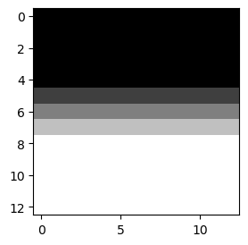
plt.imshow(m_conv(img2).squeeze().data, cmap="gray")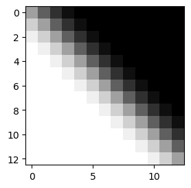
plt.imshow(m_conv(img3).squeeze().data, cmap="gray")- 평균은 회색 (검은 색으로 보이지만 아님)
m_conv(img3)tensor([[[[0.0500, 0.0500, 0.0500, 0.0500, 0.0500, 0.0500, 0.0500, 0.0500,
0.0500, 0.0500, 0.0500, 0.0500, 0.0500],
[0.0500, 0.0500, 0.0500, 0.0500, 0.0500, 0.0500, 0.0500, 0.0500,
0.0500, 0.0500, 0.0500, 0.0500, 0.0500],
[0.0500, 0.0500, 0.0500, 0.0500, 0.0500, 0.0500, 0.0500, 0.0500,
0.0500, 0.0500, 0.0500, 0.0500, 0.0500],
[0.0500, 0.0500, 0.0500, 0.0500, 0.0500, 0.0500, 0.0500, 0.0500,
0.0500, 0.0500, 0.0500, 0.0500, 0.0500],
[0.0500, 0.0500, 0.0500, 0.0500, 0.0500, 0.0500, 0.0500, 0.0500,
0.0500, 0.0500, 0.0500, 0.0500, 0.0500],
[0.0500, 0.0500, 0.0500, 0.0500, 0.0500, 0.0500, 0.0500, 0.0500,
0.0500, 0.0500, 0.0500, 0.0500, 0.0500],
[0.0500, 0.0500, 0.0500, 0.0500, 0.0500, 0.0500, 0.0500, 0.0500,
0.0500, 0.0500, 0.0500, 0.0500, 0.0500],
[0.0500, 0.0500, 0.0500, 0.0500, 0.0500, 0.0500, 0.0500, 0.0500,
0.0500, 0.0500, 0.0500, 0.0500, 0.0500],
[0.0500, 0.0500, 0.0500, 0.0500, 0.0500, 0.0500, 0.0500, 0.0500,
0.0500, 0.0500, 0.0500, 0.0500, 0.0500],
[0.0500, 0.0500, 0.0500, 0.0500, 0.0500, 0.0500, 0.0500, 0.0500,
0.0500, 0.0500, 0.0500, 0.0500, 0.0500],
[0.0500, 0.0500, 0.0500, 0.0500, 0.0500, 0.0500, 0.0500, 0.0500,
0.0500, 0.0500, 0.0500, 0.0500, 0.0500],
[0.0500, 0.0500, 0.0500, 0.0500, 0.0500, 0.0500, 0.0500, 0.0500,
0.0500, 0.0500, 0.0500, 0.0500, 0.0500],
[0.0500, 0.0500, 0.0500, 0.0500, 0.0500, 0.0500, 0.0500, 0.0500,
0.0500, 0.0500, 0.0500, 0.0500, 0.0500]]]],
grad_fn=<ConvolutionBackward0>)# plt.imshow(m_conv(img3).squeeze().data*0, cmap="gray") # *0을 해도 검은 색으로 보임plt.imshow(m_conv(img3).squeeze().data, cmap="gray", vmin=-1, vmax=1) # 실질적으로 어떤 색인지 알려면plt.imshow(m_conv(img3).squeeze().data*0, cmap="gray", vmin=-1, vmax=1) # 실질적으로 어떤 색인지 알려면plt.imshow(m_conv(img3).squeeze().data*0-1, cmap="gray", vmin=-1, vmax=1) # 검정색plt.imshow(m_conv(img3).squeeze().data*0+1, cmap="gray", vmin=-1, vmax=1) # 흰색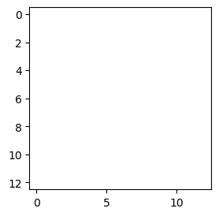
imgs.shapetorch.Size([4, 1, 16, 16])m_conv(imgs).shapetorch.Size([4, 1, 13, 13]))🗣️
m_conv = torch.nn.Conv2d(
in_channels=1,
out_channels=1,
kernel_size=4,
)
m_conv.weight.data = m_conv.weight.data*0 + 1/16
m_conv.bias.data = m_conv.bias.data*0 - 0.05 # 진짜 0이 됨fig, axs = plt.subplots(2,2)
fig.set_figheight(8)
fig.set_figwidth(8)
axs[0][0].imshow(m_conv(imgs)[0].squeeze().data,cmap="gray")
axs[0][1].imshow(m_conv(imgs)[1].squeeze().data,cmap="gray")
axs[1][0].imshow(m_conv(imgs)[2].squeeze().data,cmap="gray")
axs[1][1].imshow(m_conv(imgs)[3].squeeze().data,cmap="gray")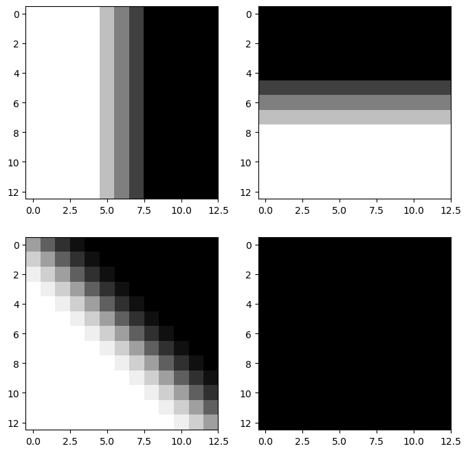
- 🗣️
- 이동평균을 했더니 0으로 나오면 체크무늬인 것을 알 수 있음
- 3개의 필터에 모두 0이 안되면 대각선인 것을 알 수 있음
🗣️(
- 매우 다양한 조합 가능
m_conv = torch.nn.Conv2d(
in_channels=1,
out_channels=1,
kernel_size=6, # 6으로 변경
)
m_conv.weight.data = m_conv.weight.data*0 + 1/16
m_conv.bias.data = m_conv.bias.data*0 - 0.05fig, axs = plt.subplots(2,2)
fig.set_figheight(8)
fig.set_figwidth(8)
axs[0][0].imshow(m_conv(imgs)[0].squeeze().data,cmap="gray")
axs[0][1].imshow(m_conv(imgs)[1].squeeze().data,cmap="gray")
axs[1][0].imshow(m_conv(imgs)[2].squeeze().data,cmap="gray")
axs[1][1].imshow(m_conv(imgs)[3].squeeze().data,cmap="gray")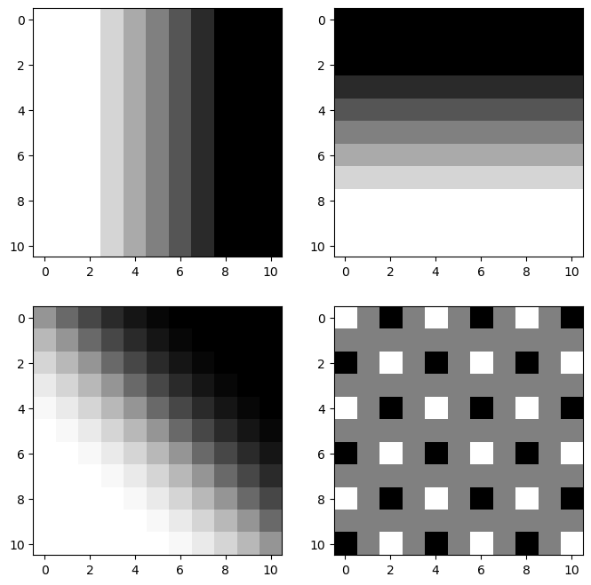
fig, axs = plt.subplots(2,2)
fig.set_figheight(8)
fig.set_figwidth(8)
axs[0][0].imshow(m_conv(imgs)[0].squeeze().data,cmap="gray")
axs[0][1].imshow(m_conv(imgs)[1].squeeze().data,cmap="gray")
axs[1][0].imshow(m_conv(imgs)[2].squeeze().data,cmap="gray")
axs[1][1].imshow(m_conv(m_conv(imgs))[3].squeeze().data,cmap="gray") # 한 번 더 걸면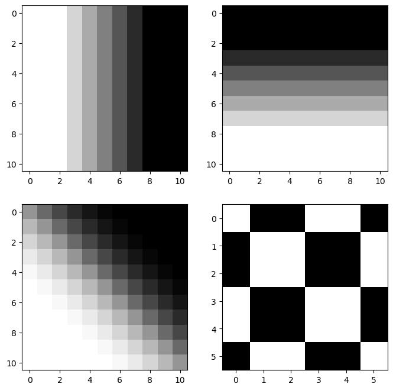
fig, axs = plt.subplots(2,2)
fig.set_figheight(8)
fig.set_figwidth(8)
axs[0][0].imshow(m_conv(imgs)[0].squeeze().data,cmap="gray")
axs[0][1].imshow(m_conv(imgs)[1].squeeze().data,cmap="gray")
axs[1][0].imshow(m_conv(m_conv(imgs))[2].squeeze().data,cmap="gray") # 이것도 한 번 더
axs[1][1].imshow(m_conv(m_conv(imgs))[3].squeeze().data,cmap="gray")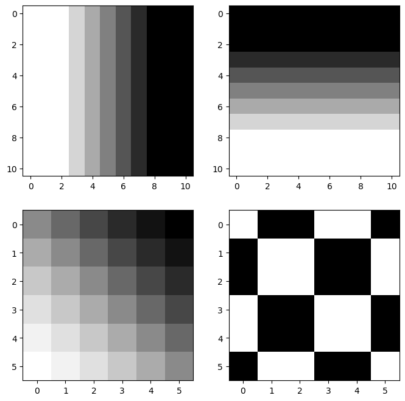
)🗣️
E. (C,D,E) + relu + mp
🗣️(
m_conv = torch.nn.Conv2d(
in_channels=1,
out_channels=1,
kernel_size=4,
)
m_conv.weight.data = m_conv.weight.data*0 + 1/16
m_conv.bias.data = m_conv.bias.data*0 - 0.05 # 진짜 0이 됨m_conv(imgs).shapetorch.Size([4, 1, 13, 13])mp = torch.nn.MaxPool2d(kernel_size=13) # 13*13 중에 가장 큰 값을 뽑음mp(m_conv(imgs)) # 마지막만 0이 됨tensor([[[[5.0000e-02]]],
[[[5.0000e-02]]],
[[[5.0000e-02]]],
[[[9.3132e-10]]]], grad_fn=<MaxPool2DWithIndicesBackward0>)mp(h_conv(imgs)) # 처음만 0이 됨tensor([[[[0.0000]]],
[[[0.2000]]],
[[[0.1000]]],
[[[0.2000]]]], grad_fn=<MaxPool2DWithIndicesBackward0>)mp(v_conv(imgs)) # 두번째만 0이 됨tensor([[[[0.2000]]],
[[[0.0000]]],
[[[0.1000]]],
[[[0.2000]]]], grad_fn=<MaxPool2DWithIndicesBackward0>)- 여기서는 큰 의미는 없지만 relu도 같이 통과를 시키면 결과가 다양해짐
relu = torch.nn.ReLU()fig, axs = plt.subplots(2,2)
fig.set_figheight(8)
fig.set_figwidth(8)
axs[0][0].imshow(relu(h_conv(imgs))[0].squeeze().data,cmap="gray")
axs[0][1].imshow(relu(h_conv(imgs))[1].squeeze().data,cmap="gray")
axs[1][0].imshow(relu(h_conv(imgs))[2].squeeze().data,cmap="gray")
axs[1][1].imshow(relu(h_conv(imgs))[3].squeeze().data,cmap="gray")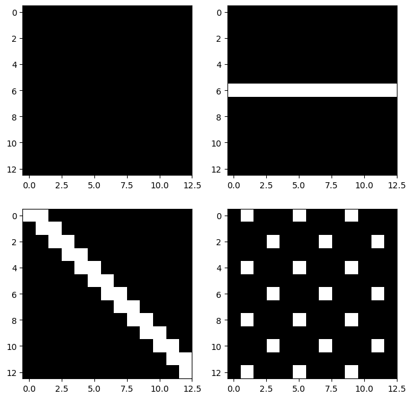
)🗣️
relu = torch.nn.ReLU()
mp = torch.nn.MaxPool2d(kernel_size=13)mp(relu(v_conv(imgs)))tensor([[[[0.2000]]],
[[[0.0000]]],
[[[0.1000]]],
[[[0.2000]]]], grad_fn=<MaxPool2DWithIndicesBackward0>)mp(relu(h_conv(imgs)))tensor([[[[0.0000]]],
[[[0.2000]]],
[[[0.1000]]],
[[[0.2000]]]], grad_fn=<MaxPool2DWithIndicesBackward0>)mp(relu(m_conv(imgs)))tensor([[[[5.0000e-02]]],
[[[5.0000e-02]]],
[[[5.0000e-02]]],
[[[9.3132e-10]]]], grad_fn=<MaxPool2DWithIndicesBackward0>)🗣️ 매우 많은 숫자들이 구분하기 용이한 숫자들로 요약됨
F. 대충 이런 구조
🗣️(
이미지1->h->r->mp->0,??,??
->v->r->mp->
->m->r->mp
이미지1->(h,v,m)->r->mp->0,??,??
이미지2->(h,v,m)->r->mp->0,??,??
이미지3->(h,v,m)->r->mp->0,??,??
이미지4->(h,v,m)->r->mp->0,??,??net = torch.nn.Sequential(
torch.nn.Conv2d(in_channels=1,out_channels=3,kernel_size=4), # bias 사용
torch.nn.ReLU(), # 다양해짐
torch.nn.MaxPool2d(kernel_size=13),
torch.nn.Flatten()
)net[0].weight.shapetorch.Size([3, 1, 4, 4])1,1,4,4 --> m_conv
1,1,4,4 --> h_conv
1,1,4,4 --> v_conv
3,1,4,4 --> convnet[0].weight.datatensor([[[[-0.0833, -0.0289, -0.2051, -0.2370],
[-0.1144, -0.0212, -0.0276, 0.1908],
[-0.1374, -0.1581, -0.0825, -0.1222],
[-0.2006, -0.1606, -0.1211, 0.0583]]],
[[[ 0.2180, -0.1371, -0.0198, -0.1251],
[-0.0198, -0.0584, 0.1258, 0.0500],
[ 0.0558, -0.0605, -0.1558, 0.2098],
[ 0.0355, -0.0771, 0.0439, 0.0692]]],
[[[ 0.2496, -0.0280, -0.1691, -0.2486],
[-0.1302, 0.1365, -0.0934, -0.2321],
[-0.0914, 0.2089, -0.1784, 0.1483],
[ 0.1498, 0.0237, 0.2464, 0.0540]]]])torch.concat(
[v_conv.weight.data,
h_conv.weight.data,
m_conv.weight.data],axis=0).shapetorch.Size([3, 1, 4, 4])net[0].weight.data = torch.concat(
[v_conv.weight.data,
h_conv.weight.data,
m_conv.weight.data],axis=0)
net[0].weight.datatensor([[[[ 0.0000, 0.0000, 0.0000, 0.0000],
[ 0.0000, 1.0000, -1.0000, 0.0000],
[ 0.0000, 1.0000, -1.0000, 0.0000],
[ 0.0000, 0.0000, 0.0000, 0.0000]]],
[[[ 0.0000, 0.0000, 0.0000, 0.0000],
[ 0.0000, -1.0000, -1.0000, 0.0000],
[ 0.0000, 1.0000, 1.0000, 0.0000],
[ 0.0000, 0.0000, 0.0000, 0.0000]]],
[[[ 0.0625, 0.0625, 0.0625, 0.0625],
[ 0.0625, 0.0625, 0.0625, 0.0625],
[ 0.0625, 0.0625, 0.0625, 0.0625],
[ 0.0625, 0.0625, 0.0625, 0.0625]]]])net[0].bias.datatensor([ 0.1274, 0.2041, -0.0989])net[0].bias.data = torch.tensor([0.0,0.0, -0.05])net(imgs)tensor([[2.0000e-01, 0.0000e+00, 5.0000e-02],
[0.0000e+00, 2.0000e-01, 5.0000e-02],
[1.0000e-01, 1.0000e-01, 5.0000e-02],
[2.0000e-01, 2.0000e-01, 9.3132e-10]], grad_fn=<ViewBackward0>)두번째 0
첫번째 0
0 없음
네번째 0)🗣️
net = torch.nn.Sequential(
torch.nn.Conv2d(in_channels=1,out_channels=3,kernel_size=4), # bias 사용
torch.nn.ReLU(), # 다양해짐
torch.nn.MaxPool2d(kernel_size=13),
torch.nn.Flatten()
)
net[0].weight.data = torch.concat(
[v_conv.weight.data,
h_conv.weight.data,
m_conv.weight.data],axis=0)
net[0].bias.data = torch.tensor([0.0,0.0, -0.05])plt.matshow(net(imgs).data,cmap="gray")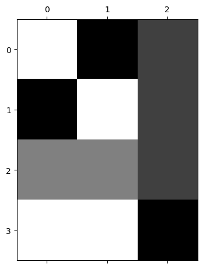
net(imgs).shapetorch.Size([4, 3])🗣️ 4개의 이미지를 각각 3개로 특징을 요약
출력은 (n,3)으로 정리되어서 나온다. 이 시점부터는 더 이상 이미지가 입력이라고 생각하지 않아도 되고, 단순히 (n, 3) 크기의 숫자 데이터가 입력으로 주어진 것처럼 보면 된다. 즉 이제부터는 이 (n,3) 데이터를 입력으로 받는 신경망을 설계하면 된다.
G. mp의 역할?
- 샘플이미지
img = torch.zeros((1, 1, 16, 16))
triangle_size = 4
for i in range(triangle_size):
for j in range(triangle_size):
if j <= i: # 아래 방향 직각삼각형 (왼쪽 위 꼭짓점 기준)
img[0, 0, i, j] = 1.0plt.imshow(img.squeeze(),cmap="gray")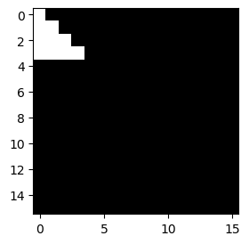
- mp1 회
mp = torch.nn.MaxPool2d(kernel_size=2)
plt.imshow(mp(img).squeeze(),cmap="gray")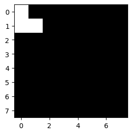
🗣️ 이미지가 1/4로 줄어듦
- mp 2~4회
mp = torch.nn.MaxPool2d(kernel_size=2)
plt.imshow(mp(mp(img)).squeeze(),cmap="gray")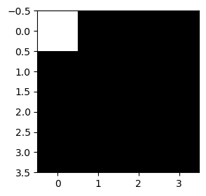
mp = torch.nn.MaxPool2d(kernel_size=2)
plt.imshow(mp(mp(mp(img))).squeeze(),cmap="gray")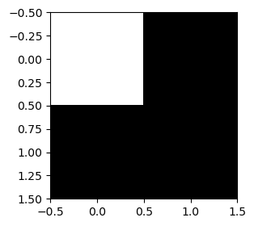
- maxpooling은 이미지를 “캐리커처화” 한다고 비유할 수 있음. 디테일은 버리고, 중요한 특징만 뽑아서 과장되게 요약한다.
- 🗣️ 사이즈를 줄이려고 사용, 중요한 정보도 손실 X
CNN
--> 2d // flatten (conv(특징)-relu(특징다변화)-maxpooling(요약))
--> 1d // 단순신경망5. FashionMNIST 📝
- 데이터
train_dataset = torchvision.datasets.FashionMNIST(root='./data', train=True, download=True)
train_dataset = torch.utils.data.Subset(train_dataset, range(5000))
to_tensor = torchvision.transforms.ToTensor()
X = torch.stack([to_tensor(img) for img, lbl in train_dataset]).to("cuda:0")
y = torch.tensor([lbl for img, lbl in train_dataset])
y = torch.nn.functional.one_hot(y).float().to("cuda:0")🗣️(
X.shapetorch.Size([5000, 1, 28, 28])plt.imshow(X[0].squeeze().cpu(),cmap="gray") # cuda에 있으므로 cpu로 보냄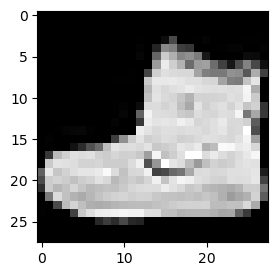
plt.imshow(X[1].squeeze().cpu(),cmap="gray") # 위와 구분될 수 있을 것 같음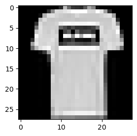
)🗣️
- 2d를 처리하고 flatten하는 네트워크
- 🗣️
- 16: 잘 모르겠지만 16개의 특징을 뽑아서 분류하고 싶음 (안 되면 늘리면 됨)
- kernel_size도 처음은 크게 크게 보며 특징을 뽑으려고 함 (해보면서 나중에 바꿔가면 됨)
- MaxPool2d(kernel_size=2) 커지면 심하게 요약 (위의 F 경우: 13)
net1 = torch.nn.Sequential(
torch.nn.Conv2d(in_channels=1,out_channels=16,kernel_size=5),
torch.nn.ReLU(),
torch.nn.MaxPool2d(kernel_size=2),
# torch.nn.Flatten()
).to("cuda:0")net1(X).shapetorch.Size([5000, 16, 12, 12])net1 = torch.nn.Sequential(
torch.nn.Conv2d(in_channels=1,out_channels=16,kernel_size=5),
torch.nn.ReLU(),
torch.nn.MaxPool2d(kernel_size=2),
torch.nn.Flatten()
).to("cuda:0")net1(X).shapetorch.Size([5000, 2304])16*12*122304출력은 (n,2304)으로 정리되어서 나온다. 이 시점부터는 더 이상 이미지가 입력이라고 생각하지 않아도 되고, 단순히 (n, 2304) 크기의 숫자 데이터가 입력으로 주어진 것처럼 보면 된다. 즉 이제부터는 이 (n,2304) 데이터를 입력으로 받는 신경망을 설계하면 된다.
- 1d를 처리하는 네트워크
🗣️(
y.shapetorch.Size([5000, 10])net2= torch.nn.Sequential(
torch.nn.Linear(2304,512),
torch.nn.ReLU(),
torch.nn.Linear(512,10)
).to("cuda:0")- 10으로 받는게 부담스러우면 위 코드처럼 해도 됨
net1(X).shapetorch.Size([5000, 2304]))🗣️
net2= torch.nn.Sequential(
torch.nn.Linear(2304,10), # 클래스가 10개
).to("cuda:0")net2(net1(X)).shapetorch.Size([5000, 10])- 두 네트워크를 결합
net = torch.nn.Sequential(
net1,
net2
)
net(X).shapetorch.Size([5000, 10])- 최종적인 코드
net = torch.nn.Sequential(
net1,
net2
)
loss_fn = torch.nn.CrossEntropyLoss() # y가 원핫인코딩
optimizr=torch.optim.Adam(net.parameters())
#---#
for epoc in range(100):
#1
netout = net(X) # 로짓
#2
loss = loss_fn(netout,y)
#3
loss.backward()
#4
optimizr.step()
optimizr.zero_grad()(net(X).argmax(axis=1) == y.argmax(axis=1)).float().mean()tensor(0.8792, device='cuda:0')🗣️(
- 예측을 더 높이려면 여러가지 테크닉을 쓰면 됨
ytensor([[0., 0., 0., ..., 0., 0., 1.],
[1., 0., 0., ..., 0., 0., 0.],
[1., 0., 0., ..., 0., 0., 0.],
...,
[0., 0., 0., ..., 0., 0., 0.],
[0., 0., 0., ..., 0., 1., 0.],
[0., 0., 0., ..., 0., 0., 0.]], device='cuda:0')net(X).argmax(axis=1) # 예측을 보려면tensor([9, 0, 0, ..., 5, 8, 3], device='cuda:0'))🗣️
Footnotes
입력shape=(1,1,?,?) 이고 출력의shape=(1,1,?,?)일 경우↩︎